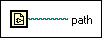

Current VI's Path Function
Owning Palette: File Constants
Requires: Base Development System
Returns the path to the file of the current VI. If the VI never has been saved, this function returns <Not A Path>.
This function always returns the current location of the VI. If you move the VI, the value returned changes.
If you build the VI into an application, this function returns the path to the VI in the application file, and treats the application file as a VI library.
 | Note To obtain the path to the directory containing the application, use the Application Directory VI. |

 Add to the block diagram Add to the block diagram |
 Find on the palette Find on the palette |